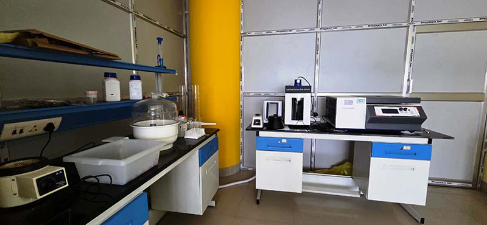
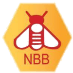

On the bench
- HPLC
- LC–MS/MS
- EA–LC–IRMS
- AAS
- UV–Visible
- Refractometer
- Microbalance
- Conductivity meter
- Pollen microscopy
- Nitrogen concentrator
Infrastructure
A 21-acre campus with ready-to-use labs, specialised analytical facilities, computing, prototyping and testing — built so that a small team can do serious science.

Core facility
The first milestone incubator at Guwahati Biotech Park — a place to test an idea, build a team and reach a market without taking on the full cost of a laboratory.
The centre offers fully furnished lab spaces with utilities and shared instrumentation, alongside office services and access to the park’s specialised facilities. It is designed for researchers, young professionals and companies setting up in the Northeast.
Testing facility
Quality, authenticity and safety testing for honey and bee products — established with support from the National Bee Board under the National Beekeeping and Honey Mission.

National Bee Board Ministry of Agriculture & Farmers Welfare, Government of India| Category | Parameters |
|---|---|
| Physical properties | Moisture, specific gravity, electrical conductivity, water-insoluble matter |
| Chemical quality | Acidity, total ash, HMF, diastase activity, proline |
| Sugar composition | Total reducing sugars, sucrose, fructose, glucose, F/G ratio |
| Authenticity | C4 sugar, C4 sugar δ13C, foreign oligosaccharides, SMR test |
| Botanical analysis | Pollen count and microscopic examination |
| Safety | Heavy-metal analysis |
Methods include HPLC, LC-MS/MS, EA-LC-IRMS, spectrophotometric, gravimetric, titrimetric and microscopic techniques.
Both packages are aligned with FSSAI compliance needs.
Submit samples at the laboratory or by courier with the prescribed submission form. Reports are issued by email after analysis.
Specialised facilities
Eight specialist facilities support projects that would be too costly to build alone — each with a published charge list and requisition process.
Download formsA shared analytical facility for sample analysis, method development and validation, with instrument-use services for academia and industry.
Screening and characterisation of biological resources from Northeast India for new products, compounds and bioactives.
Plant tissue culture and micropropagation support for horticulture, forestry, floriculture and commercial crop programmes.
Extraction, concentration and purification of herbal and natural products, from bench-scale trials to larger batches.
Fermentation and downstream support for bioprocess development, including bench and pilot-scale equipment.
Shared utilities and general equipment that keep laboratory work running, available on a charge basis.
Controlled-environment growing space for plant research, tissue-culture acclimatisation and crop trials.
Temperature-controlled storage for samples, cultures and materials that need a stable cold chain.
More on campus
Computing, prototyping, fisheries, advisory, training and technology transfer — each facility connects to the same campus and the same community.
Dedicated computing and analytical support for genomics, proteomics and data-driven biology, with training for students and industry teams.
A pre-incubation and prototyping centre under the national NIDHI-PRAYAS programme, helping innovators move from a drawing to a working proof.
The Business Incubation Centre for Fisheries and Aquaculture supports founders working across fish, aquaculture and allied value chains.
Scientific and technical advice for entrepreneurs, industry and institutions — from method development to business-plan preparation.
Hands-on programmes on sophisticated instruments and applied biotechnology, plus internships, dissertations and guided campus visits.
The North East cell of the National Research Development Corporation connects regional innovators with technology transfer and IP support.
A 21-acre campus at Amingaon with developed land, common utilities and the shared spaces that make a research community work.
A DSIR-supported Skill Satellite Centre running capacity-building programmes for women in biotechnology, entrepreneurship and allied rural enterprises.
Instrumentation
Ninety instruments and general utility facilities are available at the Technology Incubation Centre, from LC-MS/MS and confocal microscopy to fermenters and cold storage.
| Instrument / equipment | Make / model |
|---|---|
| LC MS/MS | Agilent 6410 Triple Quad MS-MS |
| GC MS | PerkinElmer Clarus680 GC/600C MS |
| CHNS Elemental Analyzer | Eurovector EA3000 |
| Mass Directed auto-purification system | Agilent 1200 Series |
| UV Spectrophotometer | Analytik Jena, Model: Specord 210 BU Plus |
| IR Spectrophotometer | Thermo Fisher Thermo Nicolet iS10 |
| Speed Vac (Vacuum Concentrator) | Eppendorf Concentrator Plus |
| Ultracentrifuge | Beckman Coulter L100K |
| Digital Polarimeter | Rudolf AUTOPOL IV |
| Digital pH Meter | Mettler five easy TM PH Meter |
| Sonicator | Sonics VCX-500 Sonicator Vibra Cell Ultrasonic Processor |
| High Precision Electronic Balance (5 Digit) | Sartorius Semi-Micro Model:CPA225D (2 No.s) |
| Millipore water filtration system | Millipore Ultrapure water Purification system- Millipore Elix Avance |
| Rotavapour (5L) with Pump & Chiller | Buchi R-215V (Rotavapor); JeioTech-6106M (Chiller) (10 No.s) |
| Rotavapour (20L) with Pump & Chiller | Heidolph Lebrota 20(Rotavapor); Polyscience 6100M (ChillerX2) |
| Magnetic Stirrer with Hot Plate | IKA Magnetic stirrer with Hot plate, CMAG HS7 (7 No.s) |
| Microcentrifuge (Non Refrigerated) | Eppendorf Minispin Micro centrifuge |
| Flourescence spectrophotometer | Agilent (Varian) Cary Eclipse |
| Microcentrifuge (Refrigerated) | Eppendorf Model: 5424R |
| High Speed Refrigerated Centrifuge | Hermle High Speed Table Top Refrigerated Centrifuge Model: Z 326K (4 No.s) |
| Continuos Flow Centrifuge | Hitachi High Speed Continuous Flow Centrifuge Floor Model CR 22G III |
| BOD Incubator | Scigenics-ORBITEK BOD-350L |
| CO2 Incubator | Thermo Scientific Forma series-II Water jacketed CO2 Incubator |
| Biosafety Cabinet | Thermo Scientific 1300 series Class II Water Type A2 Biosafety cabinet |
| Gel Dryer | Hoefer GD2002 Vacuum Gel Dryer |
| Horizontal Mini and Max Sub-Marine Electrophoresis Unit | Hoefer HE33 mini submarine unit & HE 99X Max submarine unit |
| Electroporator | Eppendorf Eporator |
| PCR | Agilent SURECYCLER 8800 |
| Incubator/Environmental Shaker | Scigenics -ORBITEK-LEBT |
| Hybridization Oven/Shaker | Scigenics -ORBITEK- HiBi-2D |
| Autoclave (Vertical) | MAC MSW-101(FAD) |
| Vortex | IKA Vortex Genius 3 |
| Slot-Blot Apparatus | Bio-Rad Bio Dot SF |
| Rotary High Vacuum Pump | MAC, MSW-RVP 200 ECO |
| Ice Flaking Machine | Simag SPR-80 Ice Flaking Machine |
| Deep Freezer (-40 o C) | Haier Make/DW-40L508 (2 No.s) |
| Deep Freezer (-86 o C) | Haier Make/DW-86L728 |
| Stereo zoom Microscope | Carl Zeiss/Discovery V 20 with motorized zoom |
| Gel Documentation System | Syngene/GBOX F3 |
| Hot Air Oven | OVFU |
| Water Bath Shaker | OVFU |
| HPTLC | CAMAG /Camag Lino Mat5 |
| Lyophilizer | LABCONCO/FreeZone Freeze Dry System (-50DC) |
| HPLC ( Analytical) & HPLC (Preparative) | Agilent/1260 Infinity (Anal) & Agilent/1260 Infinity (Prep) |
| High Precession Electronic Balance (6 digit) | A&D Company(Japan) /BM-22 |
| Heating Mantle (500mL, 1LX2, 2L) | REICO |
| Glass Distillation Unit | Borosil/3361 |
| SS Water Bath (10L & 20 L) | DAIHAN/WB-11&WB22 |
| Hot air oven with built in blower fan & digital control | Thermo Scientific/Heratherm-51028153 |
| Hot air oven | ACM-22066-I |
| Horizontal Autoclave | N-Biotek/NBSS210 |
| Confocal Microscope | Leica/TCS SP8 |
| Fluorescence Microscope | Carl Zeiss/AxioObserver Z1 |
| Ion Exchange & Fixed Gel Chromatography Unit | GE Healthcare Bio-sciences/BPG columns200/500, 140/950, 140/500 |
| Pass box | ELS Instrument/SS Passbox (Static) |
| Microwave Oven | Samsung/MC28H5023AK (2 No.s) |
| Refrigerator 400L | Samsung/RT45H5809SL/TL |
| Ice Flaker | Biobase/IME 100(FIM100) |
| Shaker | G-Bioscience/Benchtop Shaker-BT-GS-20 |
| Weighing Balance (Readability:1g, Capacity:6 kg) | WENSAR/ECB-6000 |
| Electronic Balance (4 digit, Readability:0.1mg, Max.Capacity:220 g) | Mettler Toledo/ME-204 |
| Mechanical Platform Balance 500 Kg | Scale-Tech/CWS-500 |
| Digital Platform Balance 200 Kg | Scale-Tech/CWS-200 |
| Stirrer Pilot Scale | Heidolf/MR Hei-End |
| BOD Incubator | Bio-Technics/BTI-06 |
| Homogenizer with chiller | GEA Mechanical Equipment/ High Pressure Homogenizer/PandaPLUS200 |
| Fermentor 5L | Major Science/WINPACT FS-01-A05P-220 double Jacketed |
| Refrigerator 400L | Samsung, Model: RT47K6238UT/TL/2018 |
| Growth Chamber | Alice Biotech/Growth Chamber with racks |
| Vacuum Oven | Life Science/LS-113/Priyo Scientific |
| Hot Air Oven | Vindish Instruments/Hot Air Oven |
| Rotavapor 50L | BUCHI/R-300/V-300 |
| Freeze Dryer | Telstar Technologies/LYOQUEST -55 ECO BenchTop Freeze Dryer |
| TFF System | Merck Life Sciences/COGNET M1 TFF System |
| Ultrafiltration system | Merck Life Sciences/COGENT-MICRO TFF System |
| Chromatography unit | Millipore K Prime |
| Pass Box | ELS Instrument/SS Passbox (Static) (2 No.s) |
| Refrigerator | SAMSUNG/RT45H5809SL/TL |
| Fermentor 40L | BIO GEBE; BTI/40 |
| FPLC | Biorad / NGC Quest Plus |
| Chromatography Unit | Merck Millipore/ K PRIME 40-II |
| Ultrafiltration System | Merck Millipore/ COGNET Micro |
| Vertical Autoclave | IKON/LS-103/Life Science |
| Provision for Fumehoods, Ducting, Piping | a) Bench Fume Hood and Walk-In Fume Hoods (Citizen); |
| Provision for minimal furnishing | Laboratory Workstations (Wall bench ;Island bench) |
| Chiller for 20L rotavapor | Polyscience 6100M |
| Dehumidifier | MAC |
| pH meter (digital) | Mettler five easy TM PH Meter (3 No.s) |
| Rotavapour 5L with vacuum pump | Heidolph-HEI-VAP Advantage/Hei-VAP Advantage HL |
| Vacuum pump | BUCHI/R-300V-300 |
No instruments match that search.
Instrument access is subject to availability, training and the park’s current charge list. Write to info2gbp@guwahatibiotechpark.com to plan a run.
Practical details
The shared infrastructure that makes daily research possible — and the services that help a company grow.
Modular wet laboratories available on flexible leases.
Developed land and common infrastructure at Amingaon.
Conference and non-lab office space available on lease or daily rental.
Instrument use, method development, validation and business planning.
Access a facility
Tell us what you need to measure, make or validate. We will point you to the right facility and the right person.